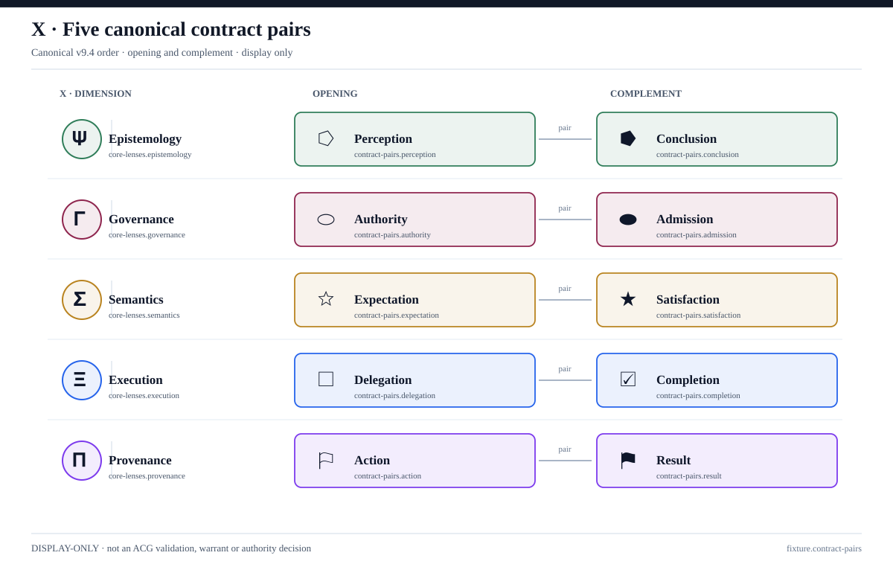
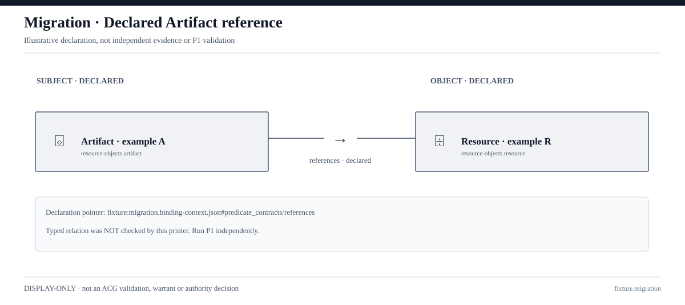
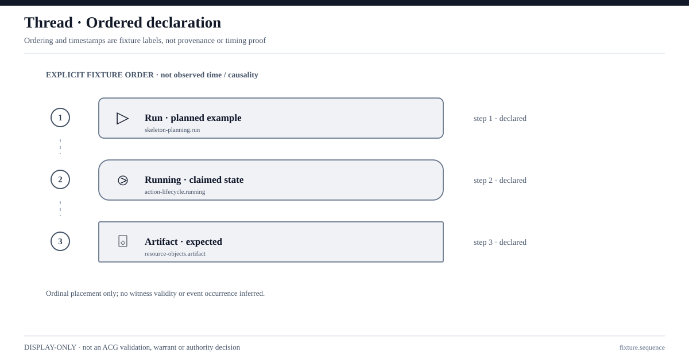
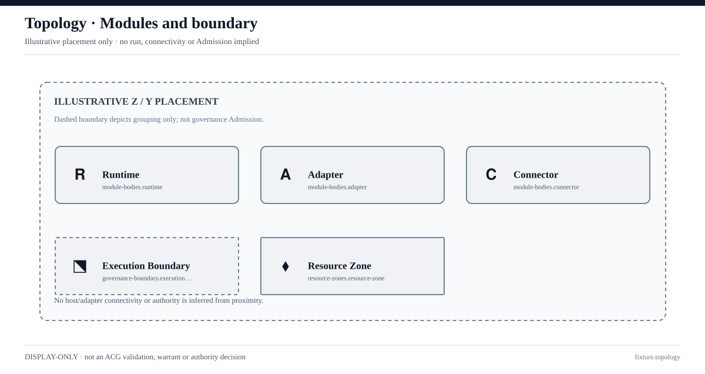

01 · Canonical contract pairs
Exakte Reihenfolge aus v9.4. Bei Font-Problemen bitte Glyphen und Beschriftungen vergleichen.
SVG einzeln öffnenVier lokale SVG-Experimente. Die Beispiele sind ausdrücklich illustrativ und keine bestätigten semantischen, historischen oder operativen Aussagen. Dies ist kein P1-Release.

SVG einzeln öffnen
SVG einzeln öffnen
SVG einzeln öffnen
SVG einzeln öffnenDie visuelle Abnahme und der Vergleich auf Safari/Chrome/Mac sind offen. Siehe GATE_2D.md.